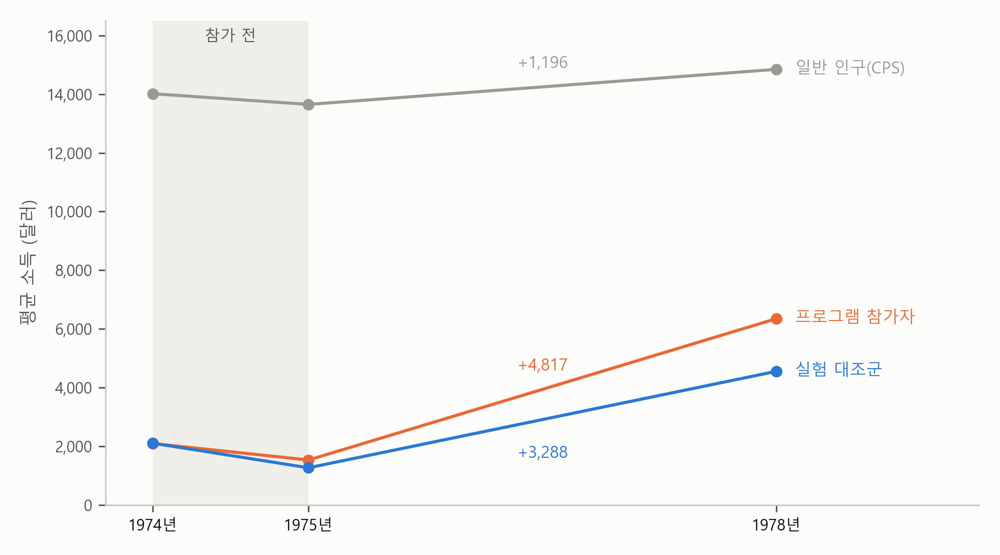

4. 정답이 있는 예 — 나란하지 않으면 얼마나 빗나가나#
보고서의 한계 첫 줄은 이렇게 끝납니다.
지정 전에 비슷하게 움직였다는 것은 근거일 뿐 증명이 아니다.
앞 절에서 아파트의 지정 전 다섯 달을 보았지만, 아파트 자료에는 정답이 없어서 가정이 흔들릴 때 답이 얼마나 빗나가는지 알 수 없었습니다. 이 절에서는 정답을 아는 자료로 돌아가 봅니다.
미리 답부터 말하면, 두 그룹이 나란히 움직이지 않으면 이중차분의 답은 정답의 두 배까지도 빗나갑니다. 그리고 처치 전에 나란해 보였다고 해서 그런 일이 없으리라는 보장은 없습니다. 인과 장의 일자리 제공 프로그램 자료가 그것을 보여 줍니다.
정답과 맞대기 — 참가 직전에 떨어진 소득#
인과 장의 일자리 제공 프로그램 자료에는 정답이 있습니다. 추첨으로 나눈 실험이 알려 준 프로그램의 효과, 1978년 소득 1,794달러입니다. 이 자료에는 참가 전인 1974년과 1975년의 소득도 있어서, 이중차분으로 같은 효과를 구해 보고 정답과 맞대 볼 수 있습니다.
그림 4-1은 프로그램 참가자, 추첨에서 떨어진 실험 대조군, 일반 인구(CPS)의 평균 소득을 그린 것입니다.

그림 4-1. 일자리 제공 프로그램 참가자, 실험 대조군, 일반 인구(CPS)의 1974년, 1975년, 1978년 평균 소득(1982년 달러). 선 옆의 숫자는 1975년에서 1978년까지 늘어난 금액이다.
아파트에서 한 것처럼 대역을 세워 봅시다. 참가자의 1975년 소득에서 출발해, 비교 상대가 1978년까지 늘어난 만큼 늘었다고 보는 것입니다. 표 4-1이 그 결과입니다.
표 4-1. 일자리 제공 프로그램의 효과 — 1978년 소득 비교와 이중차분
비교 상대 |
1978년 소득을 그대로 비교 |
이중차분 (1975 → 1978) |
|---|---|---|
실험 대조군 (260명) |
1,794 (633) |
1,529 (680) |
일반 인구, CPS (15,992명) |
−8,498 (712) |
3,621 (571) |
주: 칸마다 참가 여부(treat) 하나만 넣은 회귀식의 계수(달러)이고, 괄호는 표준오차다. 참가자는 185명. 이중차분 열은 종속변수가 1978년 소득 − 1975년 소득이다. 1978년 소득을 그대로 비교한 열은 인과 장의 실험의 답과 일반 인구와의 단순 비교다.
일반 인구와 비교한 이중차분은 3,621달러입니다. 1978년 소득을 그대로 비교한 마이너스 8,498달러보다는 실험의 답에 훨씬 가깝지만, 이번에는 실험의 답의 두 배가 넘습니다. 추첨에서 떨어진 실험 대조군과 비교한 이중차분은 1,529달러로 실험의 답과 가깝습니다. 같은 계산인데 비교 상대에 따라 답이 이렇게 달라진 것은, 일반 인구가 참가자와 나란히 움직이지 않았기 때문입니다. 그림 4-1에서 1975년부터 1978년까지 실험 대조군의 소득은 일반 인구보다 세 배 가까이 늘었습니다. 프로그램을 신청한 사람들의 소득은 프로그램이 없어도 일반 인구보다 훨씬 빨리 늘었고, 일반 인구만큼만 늘었다고 세운 대역은 너무 낮았습니다.
왜 그렇게 빨리 늘었을까요? 그림 4-1에서 참가자와 실험 대조군 모두 참가 직전인 1974년에서 1975년 사이에 소득이 떨어졌습니다. 소득이 떨어진 바로 뒤에 프로그램을 신청한 셈이니, 프로그램이 없었어도 소득은 어느 정도 되올라왔을 것입니다. 보충수업으로 말하면, 지난 시험을 유난히 망친 학생들이 보충수업을 신청한 것과 같습니다. 이 학생들은 보충수업을 듣지 않았어도 다음 시험에서 점수가 어느 정도 회복되었을 것이고, 그 회복까지 보충수업 덕분으로 계산하면 답이 부풀려집니다.
이런 일은 흔합니다. 허리가 가장 아플 때 병원에 가는 사람은 치료를 받지 않았어도 며칠 뒤 조금 나아졌을 수 있습니다. 매출이 가장 나쁜 달에 컨설팅을 받은 가게는 컨설팅이 없어도 다음 달 매출이 조금 회복되었을 수 있습니다. 처치를 받는 때가 아무 때나가 아니라 가장 나쁠 때라면, 처치를 받지 않은 쪽은 그 뒤의 회복을 보여 주지 못합니다.
앞 절에서 본 아파트의 2월은 방향만 반대일 뿐 같은 구조입니다. 4개 구는 계약이 해제로 유난히 많아진 때에 지정되었습니다. 그 높이에서 출발한 4개 구가 지정이 없었다면 어디로 갔을지는, 그런 사정이 없던 21개 구의 움직임만으로는 알 수 없습니다.
나란해 보여도 증명은 아니다#
그렇다면 처치 전에 나란했는지만 확인하면 될까요? 일자리 제공 프로그램 자료가 그렇지 않다는 것을 보여 줍니다. 그림 4-1에서 참가 전인 1974년에서 1975년까지의 변화를 보면, 참가자의 소득은 564달러 줄었고 일반 인구의 소득은 366달러 줄었습니다. 둘의 차이는 200달러쯤으로, 그 뒤 3년 동안 벌어진 차이에 비하면 아주 작습니다. 이 점검만 보면 두 그룹이 나란히 움직인 것처럼 보이지만, 1978년까지는 나란히 움직이지 않았고 이중차분의 답은 정답의 두 배가 되었습니다.
처치 전에 나란했다는 것은 처치가 없었다면 처치 뒤에도 나란했으리라는 좋은 근거입니다. 하지만 처치 뒤의 “처치가 없었다면”은 끝내 볼 수 없으니, 그 가정이 맞았는지는 자료로 증명할 수 없습니다. 아파트에서 해제 이전 15주가 거의 겹쳤던 것도 같은 무게의 근거일 뿐입니다. 보고서가 한계의 첫 줄에 이 가정을 적은 이유입니다.
요약 — 이 절의 물음과 답
두 그룹이 나란히 움직이지 않으면 이중차분의 답은 얼마나 빗나갈까? 일자리 제공 프로그램 자료에서 일반 인구와 비교한 이중차분은 3,621달러로, 실험의 답 1,794달러의 두 배가 넘었다. 추첨에서 떨어진 실험 대조군과 비교하면 1,529달러로 실험의 답과 가까웠다.
왜 그렇게 빗나갔을까? 참가자들은 소득이 떨어진 직후에 프로그램을 신청해, 프로그램이 없었어도 소득이 일반 인구보다 빨리 되올라왔다. 처치를 가장 나쁠 때 받으면 처치를 받지 않은 쪽은 그 뒤의 회복을 보여 주지 못한다.
처치 전에 나란했으면 충분할까? 아니다. 이 자료에서 참가 전 1년의 변화는 일반 인구와 크게 다르지 않았지만, 그 뒤로는 나란히 움직이지 않았다.
이 장을 마치며#
이제 이 장 첫머리의 보고서를 처음부터 끝까지 읽을 수 있습니다. 요약 첫 줄의 8%는 4개 구만의 전과 후이고, 그 안에는 지정이 없었어도 줄었을 몫이 들어 있습니다(2절). 둘째 줄의 약 10분의 1은 지정되지 않은 21개 구가 줄어든 만큼을 빌려 와 세운 대역과 실제를 비교한 숫자이고, 두 그룹의 크기가 달라 둘 다 지정 직전을 100으로 맞춰 비교했습니다(2절). 셋째 줄이 가격이나 정책의 좋고 나쁨을 말하지 않는다고 적은 것도, 이 숫자가 계약 건수의 변화에 대한 답이기 때문입니다. 추정 결과 표 아래의 회귀식은 같은 두 번 빼기를 상호작용 하나로 한 것이고(2절), 그림의 지정 전 다섯 달과 해석의 셋째 줄, 한계의 첫 줄은 이 답이 나란히 움직였다는 가정 위에 있다는 것을 보여 주고, 한계의 둘째와 셋째 줄은 비교 상대도 영향을 받았을 가능성과 허가를 기다리느라 뒤로 밀린 계약을 짚으며(3절), 한계 첫 줄의 “근거일 뿐 증명이 아니다”는 정답이 있는 자료에서 그 가정이 깨진 모습으로 확인했습니다(4절).
인과 장은 실험이 없을 때 쓰는 여러 방법을 지도로 펼치며, 어느 방법이든 두 가지를 먼저 보라고 했습니다. 누구와 비교했나, 그리고 무엇을 같다고 가정했나. 이중차분의 답은 이렇습니다. 처치를 받지 않은 비교 상대와 비교했고, 처치가 없었다면 두 그룹이 나란히 움직였으리라고 가정했습니다. 이중차분은 두 그룹의 높이가 처음부터 달라도 괜찮습니다. 4개 구와 21개 구는 거래 규모가 두 배 넘게 달랐고, 보충수업을 들은 학생과 듣지 않은 학생은 30점이 달랐습니다. 이중차분이 요구하는 것은 높이가 같은 것이 아니라 움직임이 같았으리라는 것입니다.
그 가정이 그럴듯한지는 계산이 아니라 자료가 만들어진 사정을 아는 사람이 따져야 합니다. 2월 13일에 4개 구 안의 일부 동에서 허가구역이 풀렸다는 것은 자료의 숫자에 적혀 있지 않습니다. 그 사정을 알아야 그림의 2월을 다르게 읽을 수 있고, 기준 기간을 바꿔 보자고 AI에게 요청할 수 있습니다. 이 장에서 AI가 한 계산은 모두 맞았습니다. 그 계산을 효과로 해석해도 되는지를 따지는 일은 여전히 우리의 몫입니다.
AI의 보고서가 이중차분을 말하면, 비교 상대가 정말 나란히 움직였을지부터 본다.
직접 해 보기에서는 같은 자료로 2025년 10월 20일의 서울 전역 지정을 다룹니다. 이번에는 역할이 바뀌어, 지정된 쪽이 21개 구이고 이미 지정되어 있던 4개 구가 비교 상대입니다.